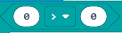

Operadores de comparación
Bloques de comparación
En los bloques de lógica en MakeCode también encontramos operadores de comparación.
Estos bloques podemos utilizarlos para establecer nuestra condición cuando tomamos decisiones.

Igual a (=)
En el caso de este bloque comparamos si un número es igual a otro. Si los dos valores comparados son iguales, entonces la condición será verdadera; si no, será falsa. En el desplegable podemos cambiar la comparación a:
-
Distinto de (≠)
-

Menor que (<)
-
Menor o igual que (≤)
-

Mayor que (>)
-
Mayor o igual que (≥)
¿Cómo lo usamos?
Un ejemplo de uso en MakeCode
En el siguiente ejemplo utilizamos una estructura de control de selección para tomar una decisión y un bloque de comparación para saber si la temperatura es mayor a un determinado valor.
SI la temperatura es mayor a 26 grados mostramos la cadena "calor"